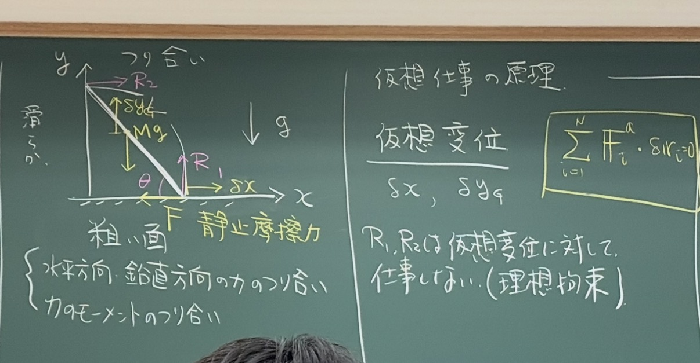
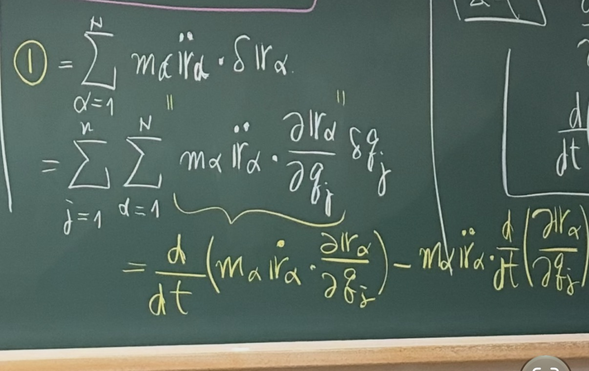

2026年度 後期 · 水曜2限 / 第4回
解析力学 第4回
摩擦力・理想拘束と式変形のやり取り
概要
摩擦力と拘束力、滑らずに転がる円板の理想拘束についてのやり取り。積の微分と、速度の2乗の偏微分を使う式変形を確認する。
原典：共有会話1、共有会話2、共有会話3、共有会話4。想定読了時間：約10分。
摩擦力と拘束力
質問
これ、摩擦力も拘束力じゃないの？釣り合って静止する条件をみたすためにはたらいているから


AIの回答
うん、静止摩擦力も「滑らない」という拘束を保つ力として、拘束力とみなせます。 ただし、この板書では 「拘束力かどうか」と「仮想仕事がゼロになるか」を分ける必要があります。
まず、「釣り合って静止する条件を満たすために働く」という説明だけでは、拘束力とは決まりません。拘束力とは、たとえば「床を突き抜けない」「接点が滑らない」といった、運動の制限を保つ力です。
この図では、棒の下端が床に沿って右へ動く仮想変位 \(\delta x\) を考えています。そのため、
- 垂直抗力 \(R_1,R_2\)：それぞれの接点の仮想変位と垂直なので、仮想仕事はゼロ。
- 静止摩擦力 \(F\)：下端の仮想変位と逆向きなので、仮想仕事は \(\delta W_F=-F\delta x\)。
つまり、この仮想変位の取り方では、摩擦力は「仮想仕事をしない理想的な拘束力」には入りません。
「でも静止摩擦なら下端は動かないのでは？」という点は、仮想変位は実際に起きる変位ではないのがポイントです。ここでは「棒の長さが変わらず、両端が壁・床に接する」という幾何学的条件を満たす、仮のずらし方を考えています。実際には静止していても、その仮想変位に対する摩擦力の仕事はゼロとは限りません。
逆に、「下端が滑らない」まで仮想変位の条件に含めれば \(\delta x=0\) になり、静止摩擦力の仮想仕事もゼロになります。ただ、この図の棒は動かせなくなるので、その仮想変位から釣り合いの情報を得られなくなります。
式変形の理由
質問
これ、なんで黄色の式に変形できる？


AIの回答
積の微分公式を逆に使っているんだよ。質量 \(m_\alpha\) は時間によらない定数として、
右辺の第2項を移項すれば、
となって、黄色の式になる！
つまり、\((fg)'=f'g+fg'\) を \(f'g=(fg)'-fg'\) と書き換えた形。ここでは \(f=m_\alpha\dot{\boldsymbol r}_\alpha\)、\(g=\partial\boldsymbol r_\alpha/\partial q_j\) に対応するよ。
式変形の途中式を書く
質問
1枚目から2枚目への式変形の途中式を書いて
入力画像：IMG_3721(1).jpeg（元ファイル未保存）。共有会話で画像を開く
入力画像：IMG_3722(1).jpeg（元ファイル未保存）。共有会話で画像を開く
AIの回答
ポイントは、位置 \(\mathbf r_\alpha\) と速度 \(\dot{\mathbf r}_\alpha\) の偏微分の関係です。\(\mathbf r_\alpha=\mathbf r_\alpha(q_1,\ldots,q_n,t)\) とすると、
なので、
が成り立ちます。また、
したがって、
ではなく、今回使うのは
です。
これらを使うと、1枚目の角括弧の中は、次のように変形できます（積は内積です）。
最後の変形では、合成関数の微分
を使っています。これを \(\sum_{j=1}^{n}\sum_{\alpha=1}^{N}\) の中に戻せば2枚目の形です。1枚目の \(\delta q_j\) も、そのまま外側に掛かります。
追質問
2行目から3行目の変更が気になってる
AIの回答
そこは、速度の2乗を偏微分すると、合成関数の微分で \(2\dot{\mathbf r}_\alpha\) が出ることを使ってる。
まず、\(\dot{\mathbf r}_\alpha^{\,2}=\dot x_\alpha^2+\dot y_\alpha^2+\dot z_\alpha^2\) なので、変数 \(s\) による偏微分は
この等式を右辺から左辺へ使うと、\(s=\dot q_j\) の場合は
\(s=q_j\) の場合は
この2つをそれぞれ代入したのが3行目。外側の \(\dfrac{d}{dt}\) はそのままで、中身だけを書き換えているよ。
理想拘束の確認
質問
粗い直線上を滑ることなくころがる円板の運動は理想拘束を満たす例である。 あってるよね？
AIの回答
うん、合ってるよ。 すべることなく転がる円板では、接触点の許される仮想変位がゼロになるので、拘束力（垂直抗力と静止摩擦力）のする仮想仕事もゼロ。したがって、理想拘束の例になる。
「粗い」は滑りを防ぐ静止摩擦が働くという意味で、摩擦があるから非理想拘束になるわけではないよ。なお、転がり抵抗や変形によるエネルギー損失は無視している。